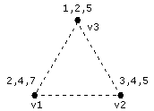

Return the maximum number of face influences.
HRESULT GetMaxFaceInfluences( DWORD* maxFaceInfluences );
If the method succeeds, the return value is D3D_OK.
If the method fails, the return value can be D3DERR_INVALIDCALL.
Each face can be affected by n bones. The following diagram shows a face affected by 6 bones (the union of bones effecting each vertex of the face).

Header: Declared in d3dx8mesh.h.
Import Library: Use d3dx8.lib.